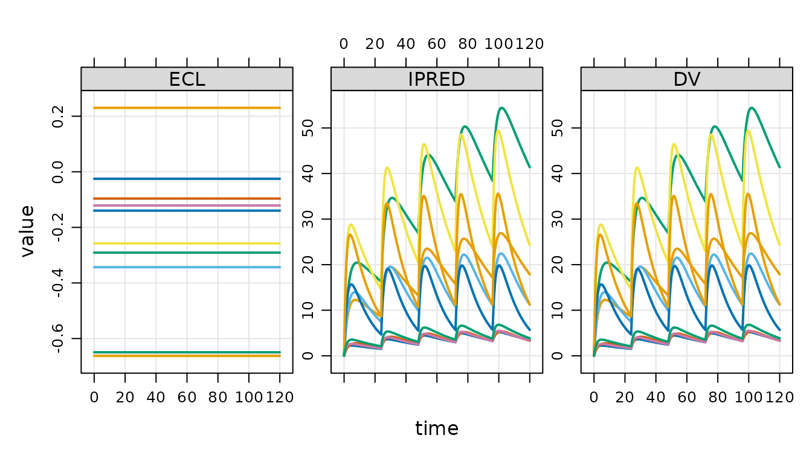

Overview
mrgsim.ds provides an Apache Arrow-backed
simulation output object for mrgsolve, greatly reducing the memory
footprint of large simulations and providing a high-performance pipeline
for summarizing huge simulation outputs. The arrow-based simulation
output objects in R claim ownership of their files on disk. Those files
are automatically removed when the owning object goes out of scope and
becomes subject to the R garbage collector. While “anonymous”,
parquet-formatted files hold the data in tempdir() as you
are working in R, functions are provided to move this data to more
permanent locations for later use.
Load a model
Load a model using mread_ds() or other friends.
mod <- mread_ds("popex-2.mod", outvars = "IPRED, DV, ECL")This model is almost identical to the same model loaded with
mread(); there is just some extra information included in
the model object to make sure it works well with the
mrgsim.ds approach.
Other functions you can use to load a model include
These all mimic the corresponding functions in mrgsolve.
Simulate
To simulate, call mrgsim_ds(); all arguments get passed
to mrgsim().
data <- evd_expand(amt = c(100, 300, 700), ii = 24, addl = 4, ID = 1:10)
data <- mutate(data, dose = AMT)
set.seed(98)
out <- mrgsim_ds(mod, data = data, end = 5*24, recover = "dose")The output behaves very similarly to regular mrgsim()
output.
out## Model: popex-2_mod
## Dim : 7,260 x 6
## Files: 1 [140.2 Kb]
## Owner: yes (gc)
## ID TIME ECL IPRED DV dose
## 1: 1 0.0 -0.1397334 0.0000000 0.0000000 100
## 2: 1 0.0 -0.1397334 0.0000000 0.0000000 100
## 3: 1 0.5 -0.1397334 0.7493918 0.7493918 100
## 4: 1 1.0 -0.1397334 1.2650920 1.2650920 100
## 5: 1 1.5 -0.1397334 1.6175329 1.6175329 100
## 6: 1 2.0 -0.1397334 1.8559447 1.8559447 100
## 7: 1 2.5 -0.1397334 2.0147377 2.0147377 100
## 8: 1 3.0 -0.1397334 2.1179631 2.1179631 100
head(out)## # A tibble: 6 × 6
## ID TIME ECL IPRED DV dose
## <dbl> <dbl> <dbl> <dbl> <dbl> <dbl>
## 1 1 0 -0.140 0 0 100
## 2 1 0 -0.140 0 0 100
## 3 1 0.5 -0.140 0.749 0.749 100
## 4 1 1 -0.140 1.27 1.27 100
## 5 1 1.5 -0.140 1.62 1.62 100
## 6 1 2 -0.140 1.86 1.86 100
tail(out)## # A tibble: 6 × 6
## ID TIME ECL IPRED DV dose
## <dbl> <dbl> <dbl> <dbl> <dbl> <dbl>
## 1 30 118. -0.00385 19.4 19.4 700
## 2 30 118 -0.00385 19.0 19.0 700
## 3 30 118. -0.00385 18.5 18.5 700
## 4 30 119 -0.00385 18.1 18.1 700
## 5 30 120. -0.00385 17.7 17.7 700
## 6 30 120 -0.00385 17.2 17.2 700
dim(out)## [1] 7260 6
names(out)## [1] "ID" "TIME" "ECL" "IPRED" "DV" "dose"
plot(out, nid = 10)
out owns the file that contains the simulated data.
## > Objects: 1 | Files: 1 | Size: 140.2 Kb
check_ownership(out)## [1] TRUEThis object is an environment and therefore is modified by reference.
If you want to make a copy of this object, use
copy_ds().
out2 <- copy_ds(out, own = TRUE)You can specify which object will own the files on copy.
Summarizing outputs with arrow
mrgsim.ds provides access points to dplyr / arrow data wrangling pipelines.
out %>%
filter(TIME == 5*24) %>%
select(TIME, dose, IPRED) %>%
group_by(dose) %>%
summarise(
Min = min(IPRED),
Mean = mean(IPRED),
Max = max(IPRED),
.groups = "drop"
) %>% collect()## # A tibble: 3 × 4
## dose Min Mean Max
## <dbl> <dbl> <dbl> <dbl>
## 1 100 2.02 3.39 4.97
## 2 300 5.70 10.6 17.9
## 3 700 7.29 18.6 41.4Note that we must call collect() or
as_tibble() here in order to realize the summarized
results.
See the Arrow documentation for more details on these Arrow
pipelines. For now, note that if you want exact quantile summaries
(including median), you have to convert to a duckdb object. This is
cheap and easy to do with the as_duckdb_ds() function.
out %>%
as_duckdb_ds() %>%
filter(TIME == 5*24) %>%
select(TIME, dose, IPRED) %>%
group_by(dose) %>%
summarise(
P5 = quantile(IPRED, 0.05, na.rm = TRUE),
Mean = mean(IPRED),
Median = median(IPRED),
P95 = quantile(IPRED, 0.95, na.rm = TRUE),
.groups = "drop"
) %>% collect()## Warning: Missing values are always removed in SQL aggregation functions.
## Use `na.rm = TRUE` to silence this warning
## This warning is displayed once every 8 hours.## # A tibble: 3 × 5
## dose P5 Mean Median P95
## <dbl> <dbl> <dbl> <dbl> <dbl>
## 1 100 2.03 3.39 3.42 4.97
## 2 700 7.93 18.6 16.8 35.8
## 3 300 6.74 10.6 10.3 15.5If you only want to get your simulated data as an R data frame,
simply coerce to tibble.
as_tibble(out)## # A tibble: 7,260 × 6
## ID TIME ECL IPRED DV dose
## <dbl> <dbl> <dbl> <dbl> <dbl> <dbl>
## 1 1 0 -0.140 0 0 100
## 2 1 0 -0.140 0 0 100
## 3 1 0.5 -0.140 0.749 0.749 100
## 4 1 1 -0.140 1.27 1.27 100
## 5 1 1.5 -0.140 1.62 1.62 100
## 6 1 2 -0.140 1.86 1.86 100
## 7 1 2.5 -0.140 2.01 2.01 100
## 8 1 3 -0.140 2.12 2.12 100
## 9 1 3.5 -0.140 2.18 2.18 100
## 10 1 4 -0.140 2.22 2.22 100
## # ℹ 7,250 more rowsIf you want the arrow data set object:
as_arrow_ds(out)## FileSystemDataset with 1 Parquet file
## 6 columns
## ID: double
## TIME: double
## ECL: double
## IPRED: double
## DV: double
## dose: double
##
## See $metadata for additional Schema metadataIf you want an arrow table object:
arrow::as_arrow_table(out)## Table
## 7260 rows x 6 columns
## $ID <double>
## $TIME <double>
## $ECL <double>
## $IPRED <double>
## $DV <double>
## $dose <double>
##
## See $metadata for additional Schema metadataWorking with lists of objects
mrgsim.ds provides utilities for working with lists of output objects that are typically realized when simulating replicates in parallel.
Here are 10 simulation replicates.
Because we used lapply(), the result is a list of
simulation output objects
class(out)## [1] "list"We’d like to work with these simulations as a single object. To do
that, use reduce_ds()
out <- reduce_ds(out)This leaves the backing files where they are, but creates a single object that now holds a single pointer to all 10 files.
Working with simulation files
In the last simulation, we created a list of output objects and then
reduced that list to a single object with the outputs held in 10 parquet
files. You can see these files when they are in
tempdir().
## 10 files [2.9 Mb]
## - mrgsims-ds-1bbd10b4be8e.parquet
## - mrgsims-ds-1bbd204e628a.parquet
## ...
## - mrgsims-ds-1bbd5dd1b150.parquet
## - mrgsims-ds-1bbd6a9e985.parquetOr get a list of the files as an R character vector:
files_ds(out)## [1] "/tmp/RtmpCw7sHd/mrgsims-ds-1bbd3cb565a2.parquet"
## [2] "/tmp/RtmpCw7sHd/mrgsims-ds-1bbd204e628a.parquet"
## [3] "/tmp/RtmpCw7sHd/mrgsims-ds-1bbd10b4be8e.parquet"
## [4] "/tmp/RtmpCw7sHd/mrgsims-ds-1bbd56a55833.parquet"
## [5] "/tmp/RtmpCw7sHd/mrgsims-ds-1bbd2bd147d7.parquet"
## [6] "/tmp/RtmpCw7sHd/mrgsims-ds-1bbd5dd1b150.parquet"
## [7] "/tmp/RtmpCw7sHd/mrgsims-ds-1bbd2fde8bb0.parquet"
## [8] "/tmp/RtmpCw7sHd/mrgsims-ds-1bbd6a9e985.parquet"
## [9] "/tmp/RtmpCw7sHd/mrgsims-ds-1bbd29263da7.parquet"
## [10] "/tmp/RtmpCw7sHd/mrgsims-ds-1bbd32f1529f.parquet"To save outputs to a persistent location, use
save_ds().
This creates an .rds file holding the (very lightweight)
simulation output object and it relocates all the backing files
to save_dir.
To read the simulations back into R:
## Model: popex-2_mod
## Dim : 144.6K x 5
## Files: 10 [2.9 Mb]
## Owner: yes (no gc)
## ID TIME ECL IPRED DV
## 1: 1 0.0 -0.0317765 0.000000 0.000000
## 2: 1 0.0 -0.0317765 0.000000 0.000000
## 3: 1 0.5 -0.0317765 1.851493 1.851493
## 4: 1 1.0 -0.0317765 2.833834 2.833834
## 5: 1 1.5 -0.0317765 3.338411 3.338411
## 6: 1 2.0 -0.0317765 3.580684 3.580684
## 7: 1 2.5 -0.0317765 3.679257 3.679257
## 8: 1 3.0 -0.0317765 3.699414 3.699414An alternative is to rename and move.
## ℹ 10 files are now located in /tmp/RtmpCw7sHd; gc is off.If you want all the simulated data output in a single parquet file that you name and locate.
write_parquet_ds(x = bah, sink = "new/path/file.parquet")Garbage collection
## Discarding 10 files.When a new simulation output object is created, that object owns the files and, by default, the files will be deleted as soon as the object goes out of scope. The files are deleted when the R garbage collector is called.
out <- mrgsim_ds(mod, data)
out## Model: popex-2_mod
## Dim : 14,460 x 5
## Files: 1 [295 Kb]
## Owner: yes (gc)
## ID TIME ECL IPRED DV
## 1: 1 0.0 -0.3538907 0.000000 0.000000
## 2: 1 0.0 -0.3538907 0.000000 0.000000
## 3: 1 0.5 -0.3538907 1.456466 1.456466
## 4: 1 1.0 -0.3538907 2.388291 2.388291
## 5: 1 1.5 -0.3538907 2.977009 2.977009
## 6: 1 2.0 -0.3538907 3.341447 3.341447
## 7: 1 2.5 -0.3538907 3.559382 3.559382
## 8: 1 3.0 -0.3538907 3.681724 3.681724You can see that out owns the files and they are marked
for garbage collection when appropriate.
output_files <- files_ds(out)
file.exists(output_files)## [1] TRUELet’s blow away out and check the files.
## used (Mb) gc trigger (Mb) max used (Mb)
## Ncells 2025442 108.2 4024487 215 4024487 215.0
## Vcells 3761556 28.7 8388608 64 6397226 48.9
file.exists(output_files)## [1] FALSEYou can ask mrgsim.ds to notify you when the file gc is called. We won’t see the message output in this vignette, but you can confirm it in your R session.
## used (Mb) gc trigger (Mb) max used (Mb)
## Ncells 2024835 108.2 4024487 215 4024487 215.0
## Vcells 3755531 28.7 8388608 64 6397226 48.9You can prevent the file gc from removing the files.
## Model: popex-2_mod
## Dim : 14,460 x 5
## Files: 1 [295 Kb]
## Owner: yes (no gc)
## ID TIME ECL IPRED DV
## 1: 1 0.0 -0.2222274 0.000000 0.000000
## 2: 1 0.0 -0.2222274 0.000000 0.000000
## 3: 1 0.5 -0.2222274 1.212429 1.212429
## 4: 1 1.0 -0.2222274 2.084579 2.084579
## 5: 1 1.5 -0.2222274 2.706065 2.706065
## 6: 1 2.0 -0.2222274 3.143001 3.143001
## 7: 1 2.5 -0.2222274 3.444165 3.444165
## 8: 1 3.0 -0.2222274 3.645541 3.645541Now, your files will remain after the object goes out of scope. But
remember that, in this example, the files are still in
tempdir() and they will be blown away when R restarts. So
if you really want to keep the output files safe, it’s best to use
save_ds(), move_ds(), or
write_parquet_ds() to relocate files out of
tempdir(), while also disabling file garbage
collection.